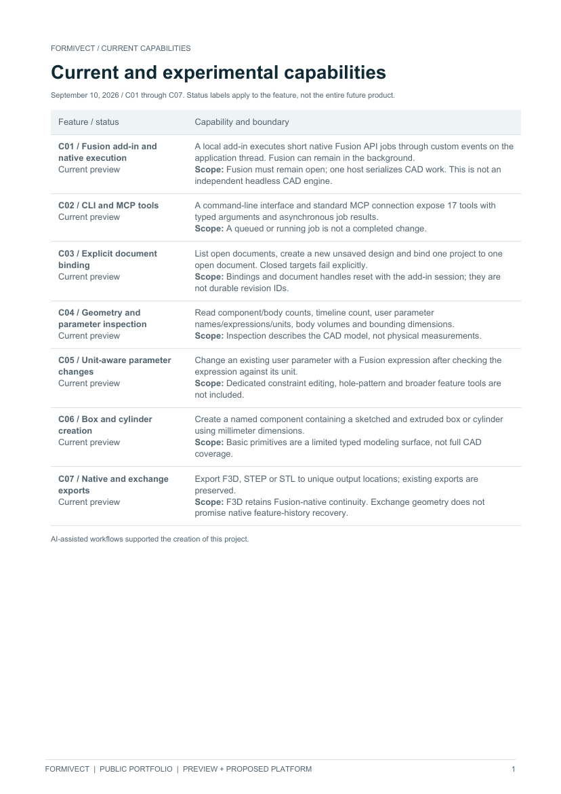
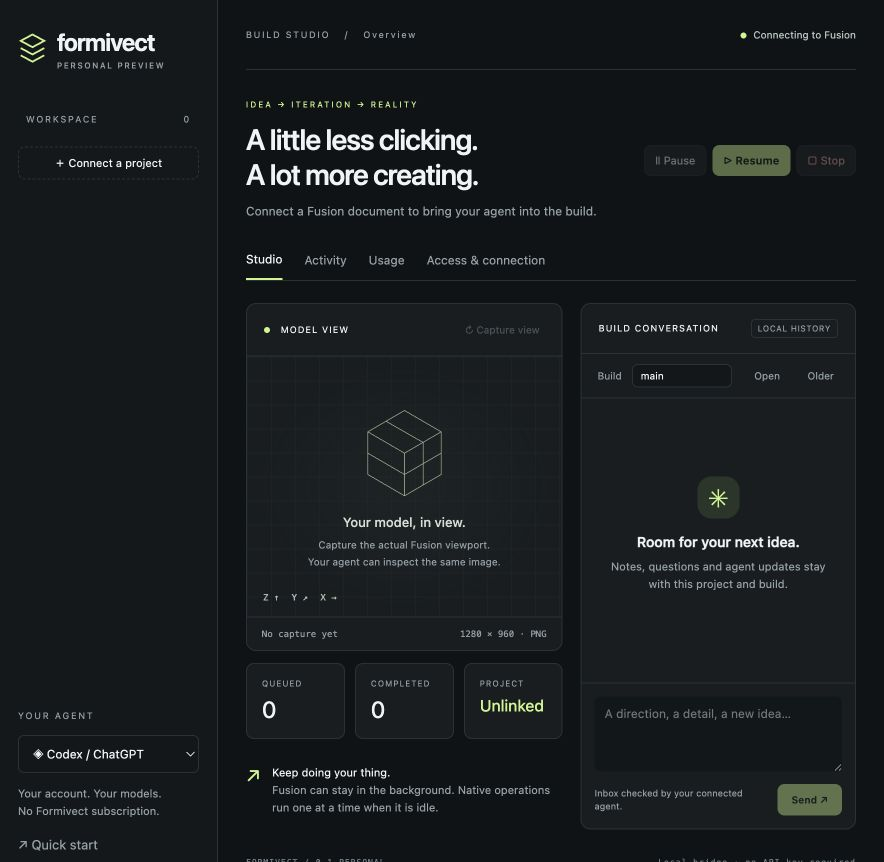
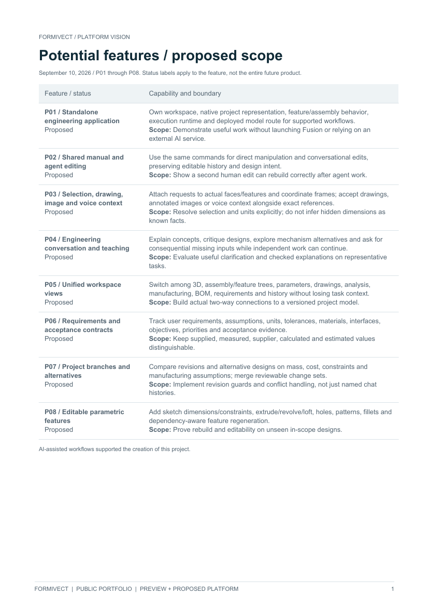
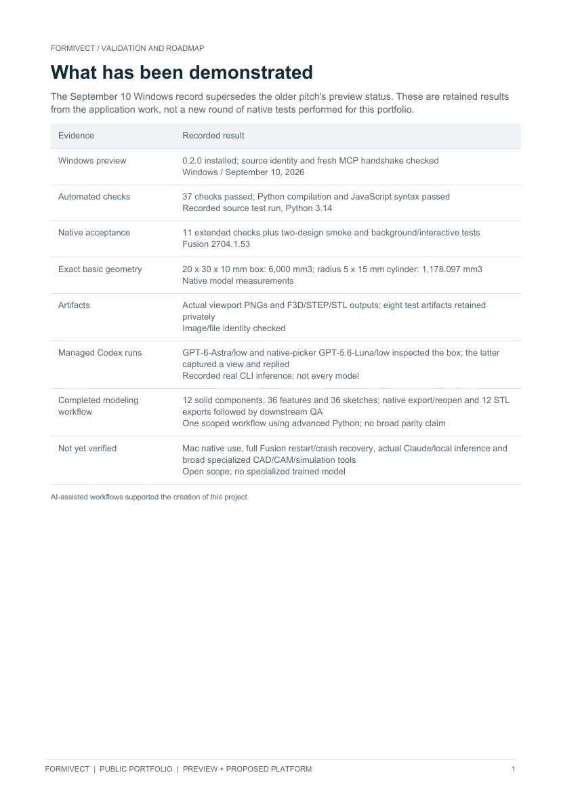
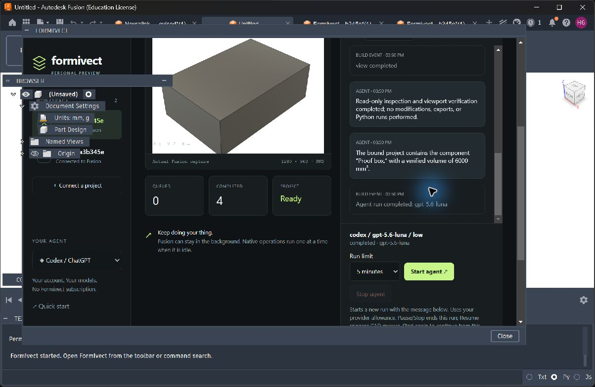

Review / 5 pages
Current capabilities
Every documented preview feature, status and practical boundary.
View current capabilities PDF ↗Harrison B. Goldberg / Engineering portfolio
Engineering AI
Workspace
A working Fusion preview connecting AI to editable CAD, with a broader vision for an independent engineering platform.
Personal preview 0.2.0 · Windows verified
01 / Project intent
Formivect began as a local bridge between an AI client and a real Fusion document. The current preview brings native tool execution, viewport images, project histories, model selection and operation controls into one workspace.
The long-term aim is a standalone engineering environment that owns the project, native execution and deployed model route, while keeping human and agent edits compatible.
Read the case study02 / System review
Selected public documents cover every documented current capability and potential direction, with explicit availability and evidence boundaries.

Every documented preview feature, status and practical boundary.
View current capabilities PDF ↗
All documented potential features across the independent platform.
View platform vision PDF ↗
Recorded Windows evidence, remaining tests and development gates.
View validation and roadmap PDF ↗03 / Current preview
31 documented capabilities, including the explicitly unverified Claude adapter and experimental local-model route.
Inspect geometry and parameters; create boxes/cylinders; export F3D, STEP and STL; opt into broader scripting.
Explicit document binding, separate build histories, steering inbox, native palette and tutorial.
Fair scheduling, background execution, interactive-command guard, pause/resume/stop and visible job outcomes.
Per-project model/effort selection, Codex catalog and bounded launches. Claude/local adapters remain unverified.
Granular access, execution-time checks, local stores and project-pinned managed tools; full scripting is unsandboxed.
Available account windows, retained session totals, opt-in traces, reviewed data export and provider-source exclusions.
04 / Potential features
43 documented directions span the intended engineering workspace and model. These are proposed capabilities and longer-term options, with no promised delivery dates.
Parametric features, assemblies, drawing/BOM workflows, import/repair, direct editing and persistent references.
Supported numerical simulation, process checks, CAM preparation and revision-linked physical test evidence.
Requirements, design branches, alternative comparison, change impact, stale results and reusable engineering libraries.
Persistent tasks, independent workers, coordinated roles, recovery, manual takeover and resource budgets.
Independent inference, visual/geometric context, permissioned trajectories, evaluated specialization and versioned releases.
Local/hybrid/hosted modes, organization controls, independent benchmarks, workflow validation and broader supported scope.
Explore all potential features · View the 24-requirement map
05 / Recorded evidence
Mac native execution, full Fusion restart/crash recovery, real Claude/local inference and broader dedicated engineering tools remain unverified. Downstream workflow QA used separate project tools.
Recorded validation and remaining work
06 / Next stage
The next step is a representative recurring task with an independently controlled evaluation contract. A mounting-plate change order is the current candidate, not a selected market or shipped standalone workflow.
Typed engineering operations, reliable recovery and measured outcomes come before broader coverage and model specialization. The goal is useful editable work that survives further changes.
Release scope and availability| Stage | Required outcome |
|---|---|
| 1 / Choose a useful workflow | Confirm a representative recurring task and expert-reviewable acceptance contract. The mounting-plate change order remains a candidate. |
| 2 / Freeze independent evaluation | Hold out design families; define evaluator-owned geometry and editability oracles, errors and a full manual baseline. |
| 3 / Make tools and recovery reliable | Build typed feature/constraint operations, stable targets, revision guards, checkpoints and interruption recovery. |
| 4 / Establish model and data baselines | Compare licensed candidates; curate permissioned, executed trajectories with checked labels and provenance. |
| 5 / Evaluate specialization | Train versioned candidates and compare unseen-task success, correction time, latency and resource cost; retain rollback. |
| 6 / Validate independent operation | Integrate native engines, manual editing, persistent execution and owned inference into reviewed real-user workflows. |
| 7 / Expand supported engineering | Add analyses, manufacturing, drawings and broader CAD with separate benchmarks, platform tests and production support. |